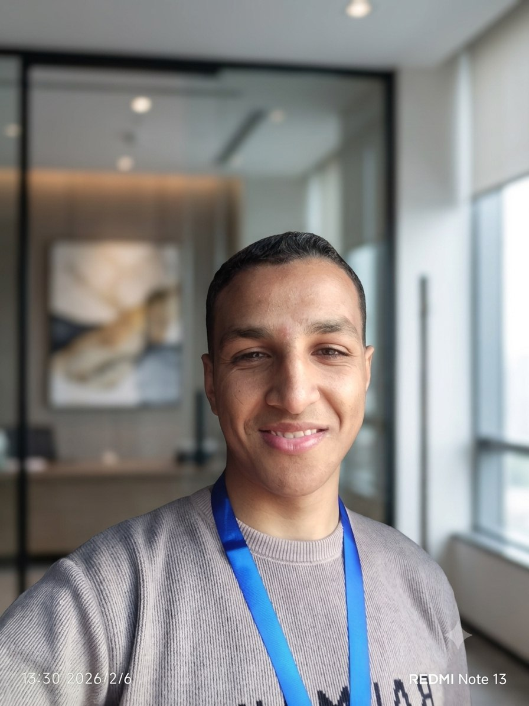

I'm Mohamed Atito — a Data Analyst and third-year Accounting student in Qena, Egypt. I clean and query data with SQL, build dashboards in Power BI, Tableau and Excel, and translate the numbers into insight that stakeholders can actually use.

I'm currently a third-year Accounting student at the Faculty of Commerce, and since mid-2024 I've been working as a freelance Data Analyst — extracting and cleaning datasets with SQL, and building dashboards in Power BI and Tableau that hold up under real scrutiny.
What I bring isn't just tool proficiency. Studying accounting alongside analytics means I read a dataset the way a business reads its numbers — in terms of revenue, cost, performance and risk — not just rows and columns. That combination is what turns a chart into a recommendation.
I hold the Google Data Analytics Professional Certificate and recently completed banking services training with Rowad Nile at Banque Misr, sharpening how I think about financial data and transactional reporting.
Every item below comes directly from hands-on freelance work — nothing here is a "familiar with," it's a "used it to ship something."
Writing SQL queries to extract and clean data, and keep every database structurally sound.
Designing and deploying automated dashboards that turn tables into decision-ready visuals.
Statistical analysis and data handling in Python, plus advanced Excel for fast, reliable modelling.
An accounting background that connects every dashboard back to revenue, cost and performance.
Working knowledge of enterprise systems used to manage and report on business operations.
The habits that make the technical work reliable — and easy to collaborate around.
The same sequence, every project — it's what keeps dashboards accurate and insights defensible.
Before opening any tool, get clear on the decision the data needs to support.
Pull from source systems and databases with SQL, keeping structure and integrity intact.
Handle nulls, duplicates and inconsistencies — the unglamorous step that decides everything after it.
Statistical analysis in Python and Excel to find the patterns worth reporting on.
Design in Power BI, Tableau or Excel around the questions stakeholders will actually ask.
Translate the visuals into a narrative that's clear without the underlying data in front of you.
Pair every insight with a next step, grounded in business and financial context.
Re-check the dashboard for errors and consistency before it reaches a stakeholder.
Click any project to see the full breakdown — business problem, tools used, and what the dashboard surfaces.
I use AI tools throughout my workflow — to speed up exploratory analysis, draft cleaner SQL and Python, and turn dashboard findings into narratives non-technical stakeholders can follow quickly. AI accelerates the process; the accuracy still comes from the same detail-oriented checks I apply to every dataset.
A dashboard is only as useful as the business context behind it. My accounting background — financial reporting, bookkeeping, and hands-on banking training — means I don't just visualize numbers, I understand what they mean for revenue, cost and performance.
Data Analyst & Business Intelligence · Third-Year Accounting Student · Qena, Egypt
Open to freelance data analysis work and Data Analyst internships. Reach out directly or send a message below.
Full work history, recommendations and updates — the fastest way to see the complete profile.